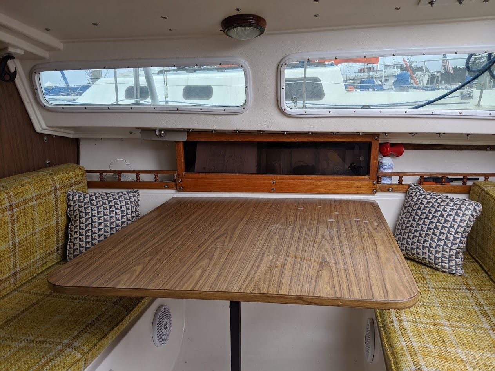
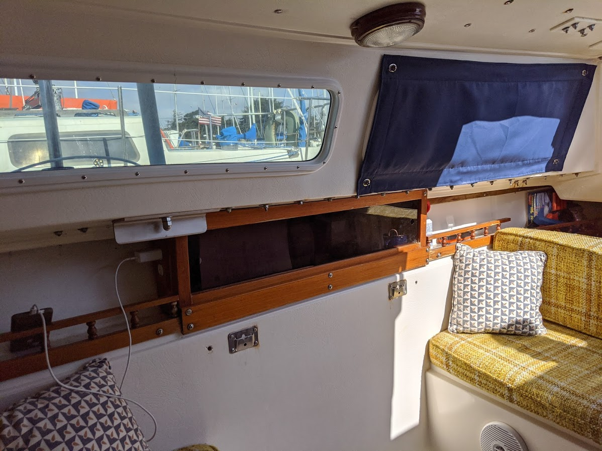
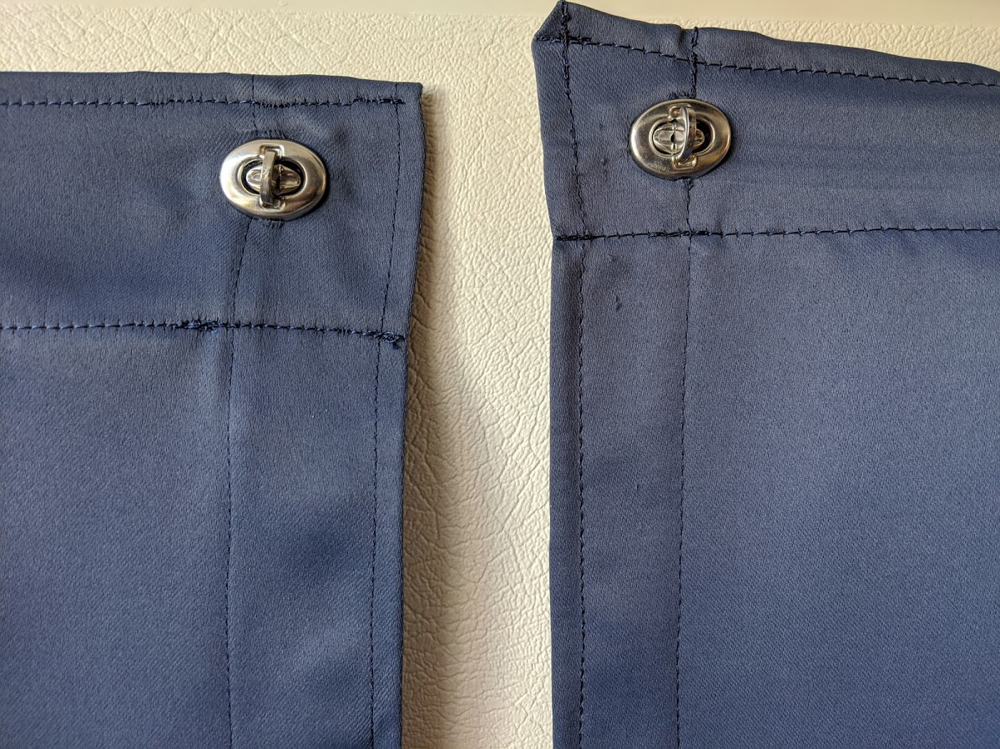
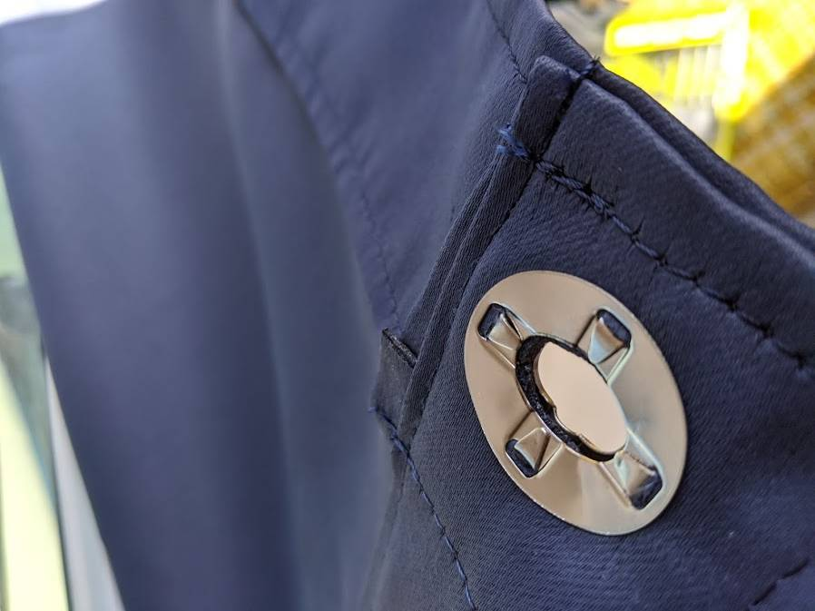

Oct 2020 — Curtain Project
We're moving on the boat! Great, exciting and all that but so much needs to change. What first? Well, privacy would be nice:

Catalina Direct has curtains, but there are 2 problems:
- our windows are non-standard and bulge out into the cabin.
- it'll cost us about $100 for the supplies per window and we have 6 of them. No way, no how.
We have long black-out curtains in our apartment and a sewing machine. We can buy some twist locks from Sailrite. Why not make our own?

Overall, the project was a success and we had just enough fabric to manage 6 curtains.
Some notes:
- We planned, cut and sewed each curtain independent of one another. For the neighboring curtains, the heights didn't line up. Also, the seams were different lengths making the entire project look a bit haphazard. Next time, I would take the extra time to make the lines match up and the seams consistent.

- On every side of each curtain, we made two folds and used tape in the first one. This means that the corners can have up to 6 layers of fabric and two layers of tape. This made sewing and cutting for twist locks difficult. Next time, I would use a single, thin fold on the sides and two folds on the top and bottom. That's what we did for the head curtain and it worked fine.
- Once installed, some of the twist locks were near impossible to turn. First, we cursed Sailrite for cheap materials. After our indignation wore off, we thought maybe the fabric was too thick between the eyelet and the backing which blocked the twist lock. Then, we realized the true culprit was that the "legs" on the eyelet weren't bent in enough. We hammered them flat and then the locks worked better.

- We were suckered into buying the Twist‑Lock Eyelet Hole Cutter from Sailrite. Well, they may work great for canvas, but the material we used... not so much. It wouldn't cut through a single layer, let alone 6 (which is pushing it I know). It was a useless expense.
- Speaking of the material, it is very slippery making it difficult to work with. Drawing parallel lines took forever because drawing the line bunched the fabric. The sewing machine had trouble with it and it's a bit stretchy so the curtains sag. It also frays when cut, so a hot knife was a must have. I wonder how long it'll last?